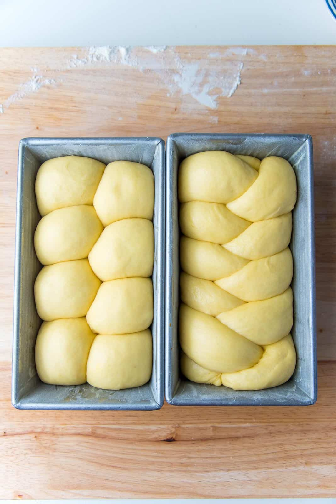
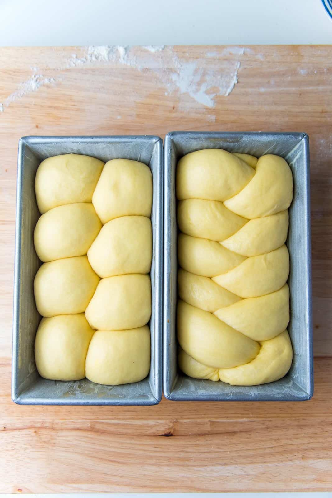

Brioche bread is a French bread, and a cross between a pastry and bread.
This is because the bread is enriched with butter and eggs. It belongs to the family of viennoisseries (think croissants, Danish pastries, sweet rolls etc.). It's a very buttery, soft and delicious bread and can be made into sweet brioche or savory brioche.
PROFESSIONAL RECIPE VS MY BRIOCHE RECIPE
Here, I'll be sharing my recipe for making amazing brioche dough at home! I had to make some changes to the recipe I tried at Le Cordon Bleu, in order to make it more accessible and convenient for home bakers, but still maintain the authentic richness and taste of classic brioche dough.
The biggest challenge was that the orignal recipe didn’t use any water or milk, and used fresh yeast. Here's the problem with that,
While fresh yeast doesn't need liquid to dissolve, fresh yeast also isn't very accessible to a home baker.
And to use any other kind of yeast, the dough will need liquid to dissolve the yeast, and that has a big impact on the recipe too.
So to fix this issue, we will be,
Using active dry yeast instead of fresh yeast – since active dry yeast is concentrated, you will only have to use about 1/2 the amount by weight. Active dry yeast will require liquid to be activated and dissolved in.
Substituting some of the egg with milk. Eggs play a big role in adding richness to brioche – especially egg yolks. So, instead of removing a whole egg, I’m removing ONE EGG WHITE, and substituting it with warm milk instead. This will allow the yeast to properly dissolve, while still keeping the richness of the dough.
Brioche Bread Recipe
Yields 2 loaves
Total Time
1 day 1 hour 45 minutes
Ingredients:
½ cup warm milk
2 ½ tsp active dry yeast
2 tsp honey
4-5 large eggs
1 yolk from a large egg. Use 2 egg yolks if using 4 large eggs.
2 tsp vanilla
5 tbsp granulated white sugar
4 cups + 2 tbsp flour
1 ½ tsp sea salt fine grind
1 cup + 2 tbsp unsalted butter very soft, roughly divided into four portions
Instructions
DAY ONE
Measure all the ingredients and have them ready.
Add the milk, yeast and honey into the mixing bowl and whisk gently to combine. Set aside for 10 minutes to allow the yeast to activate.
Add the eggs and yolks, and whisk gently to break the egg yolks.
Add the vanilla, sugar, flour and sea salt, and mix to form a scraggly dough.
With the dough hook attachment, knead the dough on speed 2 or 3 for about 3 - 5 minutes.
Divide the butter into roughly 4 portions. Add the first portion of butter, in increments, after the first 5 minutes of kneading. Allow the butter to be mixed well into the dough. This should take about 2 minutes.
Repeat with the other 3 portions of butter, kneading the dough for about 2 -3 minutes after each addition. Make sure to stop the mixer to scrape down the sides of the bowl (and the bottom if needed) between kneading as well. You will have incorporated all the butter in about 9 - 12 minutes of kneading time.
Once all the butter is incorporated, scrape down the sides of the bowl (and bottom if needed), and knead the dough for a further 5 - 15 minutes on speed 5 or 6. This could take up to 20 - 30 minutes if your mixer is on low speed.
The dough will have been kneaded enough when it can be lifted fairly cleanly off the bottom of the bowl when picked up with the dough hook. It will be very soft and tacky to the touch, but shouldn’t stick to your fingertips. Rather than strictly going by time, knead the dough until you have reached this consistency.
Flour your work surface, and turn the dough out onto the floured surface. Lightly flour your hands and the surface of the dough to prevent the dough from sticking to your palms.
Fold in the edges of the dough towards the middle and gently press them into the dough (see pictures in the post for more information). Carefully flip the dough over, and then with the heel of your palms, shape the dough to form a tight ball.
Carefully pick up the dough ball and place it back in the mixer bowl (or another large bowl).
Let it rise until it has doubled in size, in a warm place (72°F), for about 1 hour.
Turn the dough out onto a lightly floured surface, and press down gently to deflate the dough with your hands. Fold in the edges again as before towards the middle and press them in. Carefully flip the dough over (seam side down now). Tighten the dough into a ball with a smooth, taut surface (using the edges of your palms). Transfer the dough into the mixer bowl again.
Cover and let it chill in the fridge for at least 8 hours, or up to 24 hours.
DAY TWO
Remove the chilled dough from the fridge. The dough will be much easier to work with now.
Butter and dust two 8.5 x 4 inch, standard loaf pans with flour. (You can also use 9 x 5 inch loaf pans).
Keep a bowl of flour, a pastry brush and a dough scraper/cutter ready as well.
Turn the dough out onto a lightly floured surface. Deflate the dough by flattening it lightly. Measure the weight of the dough, and then divide it into two EQUAL portions, using the dough cutter or a sharp knife.
Now you've got two dough portions to make two brioche bread loaves.
Nantaise brioche loaf
ⓘ
Weigh one portion of the loaf and divide it into 8 equal portions.
For each portion (with the smooth side down), fold in the edges towards the middle as before. Carefully flip the dough over, and using a cupped palm, roll the dough portion on your work surface until you have a smooth dough ball (see pictures in the post for more details). Repeat with the other dough portions to get 8 smooth dough balls.
Place the dough balls in the loaf pan in a zig-zag manner. This will likely be a fairly snug fit.
After arranging the dough balls in the loaf pan, flatten them slightly. Then cover the pan with plastic wrap and set aside.
Braided brioche loaf
ⓘ
Divide one portion of the dough into 3 equal portions.
Flatten each portion into a small rectangle. Then tightly roll up the rectangle to form a tube. Using your palms, and a back and forth motion, roll out the dough into a 14 inch long bread rope. Apply light but even pressure to get a bread rope with even width.
Repeat with the other two portions.
Now you have three 14 inch long bread ropes. Bring the ends of the three ropes together and pinch to seal. Braid the dough, while being careful to avoid any loose folds and to not stretch the dough ropes at the same time. Once braided, the bread loaf should be a little longer than the length of the pan (about 9 - 10 inches).
Pinch to seal the other end. Using your palms, press down the ends of the bread to flatten them against the work surface. Tuck the flattened ends to get a lovely, rounded loaf.
Carefully transfer this to the buttered and floured bread pan. Flatten slightly to fit the loaf pan.
Cover with plastic wrap and set aside.
Proofing the bread before baking
Proof the bread in the covered loaf pans for about 2 hours at room temperature, or until doubled in size, and almost reaching the top of the pan. Preheat the oven to 325°F/163°C before baking the loaves.
Once doubled in size, brush the tops with an egg wash. Optionally, you can also sprinkle some Swedish sugar pearls on top for a sweet crunch.
Bake in preheated oven until golden brown on top and the internal temperature registers 190°F/88°C. This can take about 35 - 45 minutes.
Remove from the oven and let the bread loaf cool slightly - about 5 minutes.
Carefully flip the bread loaf out of the pan, onto a cooling rack. Let it cool completely. Store in an air-tight container.
 
